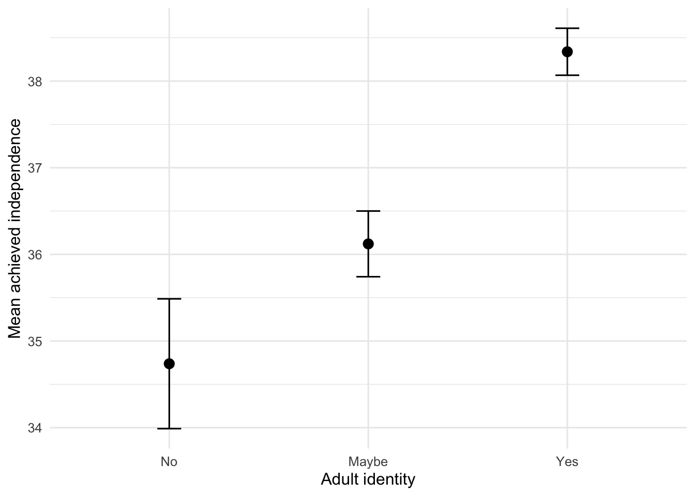
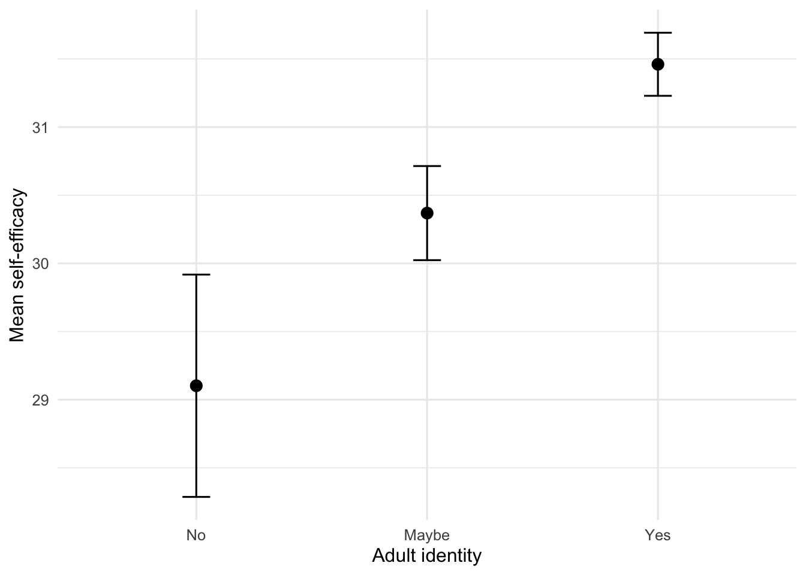

source("scripts/_setup.R")Chapter 11: Analysis of Variance
One-way independent ANOVA
Compare three independent groups with one-way ANOVA and Tukey HSD tests.
Chapter 11 of Exploring Statistics introduces one-way analysis of variance, usually called one-way ANOVA. A t test compares two means; ANOVA lets us bring three independent groups into the same analysis without running a collection of separate t tests.
Learning Goals
By the end of this chapter, you should be able to:
- identify the independent and dependent variables in a one-way ANOVA;
- explain when one-way ANOVA is appropriate;
- examine normality and homogeneity of variance;
- conduct and interpret an omnibus ANOVA;
- calculate eta squared for the overall effect;
- use Tukey HSD tests to identify which groups differ; and
- write a complete interpretation without making an unsupported causal claim.
Research Questions
- Does achieved independence differ depending on whether participants identify as adults?
- Does self-efficacy differ depending on whether participants identify as adults?
- Does stress differ depending on the extent to which participants no longer live at home?
Research Question 1: Achieved Independence and Adult Identity
We will compare MOA_ACH, the extent to which participants have achieved markers of adulthood, across the three categories of Adult: no, maybe, and yes.
Get Ready
Open 11-anova-independent.R from the scripts folder. Run the shared setup line first, and then run one section at a time.
Review Adult and MOA_ACH in Understanding EAMMi2.
First, we will give Adult readable labels.
eammi <- eammi |>
mutate(
Adult = factor(
Adult,
levels = c(3, 2, 1),
labels = c("No", "Maybe", "Yes")
)
)The category order is meaningful and will remain No, Maybe, Yes in tables and graphs.
The earlier descriptive-statistics work identified potential MOA_ACH outliers with the IQR method. Recalculate those boundaries and create a separate data frame for this analysis.
moa_bounds <- eammi |>
summarise(
Q1 = quantile(MOA_ACH, 0.25),
Q3 = quantile(MOA_ACH, 0.75),
IQR = IQR(MOA_ACH),
LowerBoundary = Q1 - (1.5 * IQR),
UpperBoundary = Q3 + (1.5 * IQR)
)
moa_bounds# A tibble: 1 × 5
Q1 Q3 IQR LowerBoundary UpperBoundary
<dbl> <dbl> <dbl> <dbl> <dbl>
1 34 41 7 23.5 51.5moa_adult_data <- eammi |>
filter(
MOA_ACH >= moa_bounds$LowerBoundary,
MOA_ACH <= moa_bounds$UpperBoundary
) |>
drop_na(MOA_ACH, Adult)This keeps eammi unchanged and makes the data decision visible in the object name.
Predict
Before running the ANOVA:
- Identify the independent and dependent variables.
- Write the null and alternative hypotheses in words and notation.
- Predict the order of the three group means.
- If the overall test is significant, predict which pairs of groups will differ.
Run
Begin by examining each group.
moa_adult_summary <- moa_adult_data |>
group_by(Adult) |>
summarise(
N = n(),
Mean = mean(MOA_ACH),
SD = sd(MOA_ACH),
SE = SD / sqrt(N),
LowerCI = Mean - qt(0.975, df = N - 1) * SE,
UpperCI = Mean + qt(0.975, df = N - 1) * SE,
Skewness = sample_skewness(MOA_ACH)
)
moa_adult_summary# A tibble: 3 × 8
Adult N Mean SD SE LowerCI UpperCI Skewness
<fct> <int> <dbl> <dbl> <dbl> <dbl> <dbl> <dbl>
1 No 141 34.7 4.50 0.379 34.0 35.5 0.899
2 Maybe 504 36.1 4.33 0.193 35.7 36.5 0.720
3 Yes 1341 38.3 5.06 0.138 38.1 38.6 0.367One-way ANOVA assumes that the outcome is close enough to normally distributed within each group and that group variances are reasonably similar. Begin by fitting the model. Then reuse the Shapiro-Wilk test from Chapter 10 and add Bartlett’s test.
moa_adult_anova <- aov(
MOA_ACH ~ Adult,
data = moa_adult_data
)
moa_variance_test <- bartlett.test(
MOA_ACH ~ Adult,
data = moa_adult_data
)
moa_normality_test <- shapiro.test(
residuals(moa_adult_anova)
)
moa_variance_test
Bartlett test of homogeneity of variances
data: MOA_ACH by Adult
Bartlett's K-squared = 18.338, df = 2, p-value = 0.0001042moa_normality_test
Shapiro-Wilk normality test
data: residuals(moa_adult_anova)
W = 0.98193, p-value = 3.676e-15summary(moa_adult_anova) Df Sum Sq Mean Sq F value Pr(>F)
Adult 2 2976 1488.2 63.3 <2e-16 ***
Residuals 1983 46625 23.5
---
Signif. codes: 0 '***' 0.001 '**' 0.01 '*' 0.05 '.' 0.1 ' ' 1aov() conducts the ANOVA. The formula repeats the pattern from Chapters 6 and 10: outcome ~ group. Here, MOA_ACH is the outcome and Adult identifies the groups.
bartlett.test() checks whether the three group variances differ. The F test used in Chapter 10 cannot be used here because it compares only two variances. residuals() retrieves the differences between the observed scores and the scores predicted by the model. The Shapiro-Wilk test checks whether those residuals differ from normal.
Both assumption tests are significant, so this analysis does not meet either assumption. Large samples can make small departures statistically significant, but the group standard deviations also show a noticeable variance difference. Because this chapter demonstrates the one-way ANOVA process, we will continue while treating the violated assumptions as an important limitation.
summary() prints the ANOVA table stored in moa_adult_anova.
Investigate
The Adult row contains the between-group effect. The Residuals row represents variability remaining within groups. Read the table in this order:
- Find the degrees of freedom for
AdultandResiduals. - Find the F value.
- Use the p value to decide whether at least one group mean differs.
The p value is less than .001, so the overall effect is significant. This omnibus test does not yet tell us which groups differ.
Calculate eta squared, the proportion of outcome variability associated with the grouping variable.
moa_eta_squared <- anova_eta_squared(
moa_adult_anova,
"Adult"
)
moa_eta_squared[1] 0.06000782anova_eta_squared() is supplied by the setup file. Its first argument is the ANOVA object. Its second argument is the grouping-variable name in quotation marks. The result is about .06, a medium effect.
Because the omnibus ANOVA is significant, use Tukey HSD comparisons.
moa_tukey <- TukeyHSD(moa_adult_anova)
moa_tukey Tukey multiple comparisons of means
95% family-wise confidence level
Fit: aov(formula = MOA_ACH ~ Adult, data = moa_adult_data)
$Adult
diff lwr upr p adj
Maybe-No 1.383443 0.2999328 2.466953 0.0078278
Yes-No 3.600965 2.5940836 4.607846 0.0000000
Yes-Maybe 2.217522 1.6233026 2.811741 0.0000000TukeyHSD() uses the fitted ANOVA object and compares every pair of adult-identity groups. The diff column gives the mean difference, lwr and upr give its confidence interval, and p adj gives a p value adjusted for making several comparisons.
Calculate Effect Sizes
Calculate Cohen’s d for the pairwise comparisons.
moa_pairwise_d <- tukey_cohens_d(
moa_adult_anova,
moa_tukey,
"Adult"
)
moa_pairwise_d# A tibble: 3 × 2
Comparison CohensD
<chr> <dbl>
1 Maybe-No 0.285
2 Yes-No 0.743
3 Yes-Maybe 0.457tukey_cohens_d() uses three pieces that you have already created: the ANOVA object, the Tukey object, and the grouping-variable name. When you adapt this pattern, all three names must refer to the same analysis.
At first glance, the Tukey output can seem confusing. It provides three pairwise comparisons and uses adjusted p values to correct for the increased risk of Type I errors. R lists the groups being compared at the beginning of each row:
Maybe-Nocompares participants who answered maybe with participants who answered no. The adjusted p value is .008, so the groups significantly differ with a small-to-moderate effect (d = 0.29).Yes-Nocompares participants who answered yes with participants who answered no. The adjusted p value is below .001, so the groups significantly differ with a moderate-to-large effect (d = 0.74).Yes-Maybecompares participants who answered yes with participants who answered maybe. The adjusted p value is below .001, so the groups significantly differ with a moderate effect (d = 0.46).
The Tukey table and moa_pairwise_d use the same comparison labels, so you can match each adjusted p value with its effect size.
Graph the group means.
moa_adult_summary |>
ggplot(aes(x = Adult, y = Mean)) +
geom_errorbar(
aes(ymin = LowerCI, ymax = UpperCI),
width = 0.12
) +
geom_point(size = 3) +
labs(
x = "Adult identity",
y = "Mean achieved independence"
)
This graph uses the layered ggplot() logic introduced in Chapter 6. Each + adds another component to the same graph:
ggplot()starts withmoa_adult_summaryand maps adult status to the x-axis and the group mean to the y-axis;geom_errorbar()adds the 95% confidence interval around each mean;geom_point()adds a dot at each group mean; andlabs()adds readable labels.
Earlier, geom_point() placed individual observations on a scatterplot. Here, each dot represents a group mean because the graph starts with the summary table. The graph uses points and confidence intervals rather than bars so both the estimate and its uncertainty are easy to see.
Use the Tukey table, effect sizes, means, and graph together. Each pair significantly differs: the Yes group has the highest mean, followed by Maybe, followed by No.
Produce
Write a paragraph that reports:
- the analysis and variables;
- the assumption results and decision to proceed;
- F, both degrees of freedom, p, and eta squared;
- the magnitude of the overall effect;
- each significant Tukey comparison with group means and pairwise d; and
- a conclusion that answers the research question.
Both variables were measured. Say that achieved independence differs across adult-identity groups. Do not say that adult identity caused the difference.
Research Question 2: Self-Efficacy and Adult Identity
Does SelfEfficacy differ across the No, Maybe, and Yes adult-identity groups?
Predict
Write the null and alternative hypotheses and predict the order of the group means.
Run
Copy the complete Research Question 1 pattern, but do not reuse the MOA_ACH outlier filter. Create a data frame containing complete SelfEfficacy and Adult scores. Then create a group summary, fit SelfEfficacy ~ Adult, and run both assumption tests.
Investigate
Evaluate the assumptions from the descriptive output. Read the omnibus table before deciding whether Tukey comparisons are needed.
Calculate Effect Sizes
Create new eta-squared, Tukey, and pairwise-d objects. Check that every object name refers to self-efficacy rather than achieved independence.
Produce
Write a complete interpretation and note whether the data conditions affect your confidence in the result.
Research Question 3: Stress and Living at Home
Does Stress differ across the No, Somewhat, and Yes categories of NoLongerHome?
Predict
Write the null and alternative hypotheses and predict the pattern of group means.
Run
Give NoLongerHome readable labels in the order No, Somewhat, Yes. Create a complete-case data frame, group summary, the model Stress ~ NoLongerHome, and both assumption tests.
Investigate
Evaluate the assumptions and read the omnibus p value. Decide whether post hoc comparisons are needed before running them.
Calculate Effect Size
Calculate eta squared. If the omnibus test is not significant, stop there; post hoc tests are used to investigate a significant omnibus difference.
Produce
Write a conclusion that reports the nonsignificant result and the magnitude of the effect. Do not interpret group differences that the omnibus test did not support.
Check Your Work
Research Question 1
Independent variable: adult identity. Dependent variable: achieved independence.
\[ H_0: \mu_{\text{no}} = \mu_{\text{maybe}} = \mu_{\text{yes}} \]
\[ H_1: \text{at least one group mean differs} \]
Both formal assumption tests were significant, so normality and homogeneity of variance were not met. We proceeded because this was a demonstration analysis, but the results should be interpreted cautiously.
A one-way ANOVA revealed that achieved independence significantly differed across adult-identity groups, F(2, 1983) = 63.30, p < .001, η² = .06. The overall effect was medium. Tukey HSD tests showed that participants who identified as adults reported greater achieved independence (M = 38.30, SE = 0.14) than participants who answered maybe (M = 36.09, SE = 0.19), p < .001, d = 0.46, and participants who did not identify as adults (M = 34.70, SE = 0.38), p < .001, d = 0.74. Participants who answered maybe also reported greater achieved independence than participants who answered no, p = .008, d = 0.29.
NoteWhy this wording matters
The first sentence intentionally says that achieved independence differed across adult-identity groups. Both variables were measured, so there was no manipulated independent variable. Without a manipulated independent variable, we cannot say that adult identity caused differences in achieved independence.
This interpretation reports standard errors because they correspond with the 95% confidence intervals in the graph. To report group standard deviations instead, use the grouped descriptive-statistics pattern from Chapters 3 and 4. moa_adult_summary includes both SD and SE.
Research Question 2
\[ H_0: \mu_{\text{no}} = \mu_{\text{maybe}} = \mu_{\text{yes}} \]
Self-efficacy does not differ across adult-identity groups.
\[ H_1: \text{at least one group mean differs} \]
Self-efficacy differs across at least one pair of adult-identity groups.
self_efficacy_data <- eammi |>
drop_na(SelfEfficacy, Adult)
self_efficacy_summary <- self_efficacy_data |>
group_by(Adult) |>
summarise(
N = n(),
Mean = mean(SelfEfficacy),
SD = sd(SelfEfficacy),
SE = SD / sqrt(N),
LowerCI = Mean - qt(0.975, df = N - 1) * SE,
UpperCI = Mean + qt(0.975, df = N - 1) * SE,
Skewness = sample_skewness(SelfEfficacy)
)
self_efficacy_anova <- aov(
SelfEfficacy ~ Adult,
data = self_efficacy_data
)
self_efficacy_variance_test <- bartlett.test(
SelfEfficacy ~ Adult,
data = self_efficacy_data
)
self_efficacy_normality_test <- shapiro.test(
residuals(self_efficacy_anova)
)
self_efficacy_eta_squared <- anova_eta_squared(
self_efficacy_anova,
"Adult"
)
self_efficacy_tukey <- TukeyHSD(self_efficacy_anova)
self_efficacy_pairwise_d <- tukey_cohens_d(
self_efficacy_anova,
self_efficacy_tukey,
"Adult"
)
self_efficacy_summary# A tibble: 3 × 8
Adult N Mean SD SE LowerCI UpperCI Skewness
<fct> <int> <dbl> <dbl> <dbl> <dbl> <dbl> <dbl>
1 No 147 29.1 5.00 0.413 28.3 29.9 -0.568
2 Maybe 518 30.4 4.00 0.176 30.0 30.7 -0.0103
3 Yes 1407 31.5 4.42 0.118 31.2 31.7 -0.162 self_efficacy_variance_test
Bartlett test of homogeneity of variances
data: SelfEfficacy by Adult
Bartlett's K-squared = 13.925, df = 2, p-value = 0.0009466self_efficacy_normality_test
Shapiro-Wilk normality test
data: residuals(self_efficacy_anova)
W = 0.98622, p-value = 3.045e-13summary(self_efficacy_anova) Df Sum Sq Mean Sq F value Pr(>F)
Adult 2 1034 516.8 27.12 2.37e-12 ***
Residuals 2069 39426 19.1
---
Signif. codes: 0 '***' 0.001 '**' 0.01 '*' 0.05 '.' 0.1 ' ' 1self_efficacy_eta_squared[1] 0.0255454self_efficacy_tukey Tukey multiple comparisons of means
95% family-wise confidence level
Fit: aov(formula = SelfEfficacy ~ Adult, data = self_efficacy_data)
$Adult
diff lwr upr p adj
Maybe-No 1.266685 0.3099061 2.223464 0.0054725
Yes-No 2.358514 1.4710631 3.245964 0.0000000
Yes-Maybe 1.091829 0.5656565 1.618001 0.0000036self_efficacy_pairwise_d# A tibble: 3 × 2
Comparison CohensD
<chr> <dbl>
1 Maybe-No 0.290
2 Yes-No 0.540
3 Yes-Maybe 0.250self_efficacy_summary |>
ggplot(aes(x = Adult, y = Mean)) +
geom_errorbar(
aes(ymin = LowerCI, ymax = UpperCI),
width = 0.12
) +
geom_point(size = 3) +
labs(
x = "Adult identity",
y = "Mean self-efficacy"
)
Both assumption tests were significant, so normality and homogeneity of variance were not met. Self-efficacy significantly differed across adult-identity groups, F(2, 2069) = 27.12, p < .001, η² = .03. The overall effect was small to medium. Participants who answered yes had higher self-efficacy (M = 31.46, SE = 0.12) than participants who answered maybe (M = 30.37, SE = 0.18), p < .001, d = 0.25, and no (M = 29.10, SE = 0.41), p < .001, d = 0.54. The maybe group also had higher self-efficacy than the no group, p = .005, d = 0.29. Because both assumptions were violated, this demonstration result should be interpreted cautiously.
Research Question 3
\[ H_0: \mu_{\text{no}} = \mu_{\text{somewhat}} = \mu_{\text{yes}} \]
Stress does not differ across the extent to which participants no longer live at home.
\[ H_1: \text{at least one group mean differs} \]
Stress differs across at least one pair of living-at-home groups.
eammi <- eammi |>
mutate(
NoLongerHome = factor(
NoLongerHome,
levels = c(1, 2, 3),
labels = c("No", "Somewhat", "Yes")
)
)
stress_home_data <- eammi |>
drop_na(Stress, NoLongerHome)
stress_home_summary <- stress_home_data |>
group_by(NoLongerHome) |>
summarise(
N = n(),
Mean = mean(Stress),
SD = sd(Stress),
SE = SD / sqrt(N),
Skewness = sample_skewness(Stress)
)
stress_home_anova <- aov(
Stress ~ NoLongerHome,
data = stress_home_data
)
stress_home_variance_test <- bartlett.test(
Stress ~ NoLongerHome,
data = stress_home_data
)
stress_home_normality_test <- shapiro.test(
residuals(stress_home_anova)
)
stress_home_eta_squared <- anova_eta_squared(
stress_home_anova,
"NoLongerHome"
)
stress_home_summary# A tibble: 3 × 6
NoLongerHome N Mean SD SE Skewness
<fct> <int> <dbl> <dbl> <dbl> <dbl>
1 No 829 32.7 4.04 0.140 -0.0929
2 Somewhat 656 32.8 3.91 0.153 0.397
3 Yes 565 32.6 4.22 0.178 -0.619 stress_home_variance_test
Bartlett test of homogeneity of variances
data: Stress by NoLongerHome
Bartlett's K-squared = 3.5913, df = 2, p-value = 0.166stress_home_normality_test
Shapiro-Wilk normality test
data: residuals(stress_home_anova)
W = 0.97937, p-value < 2.2e-16summary(stress_home_anova) Df Sum Sq Mean Sq F value Pr(>F)
NoLongerHome 2 16 7.807 0.476 0.621
Residuals 2047 33573 16.401 stress_home_eta_squared[1] 0.0004648843The Bartlett test was not significant, so the homogeneity-of-variance assumption was met. The Shapiro-Wilk test was significant, so the normality assumption was not met. Stress did not significantly differ across the extent to which participants no longer lived at home, F(2, 2047) = 0.48, p = .62, η² < .001. The overall effect was very small. Because the omnibus test was not significant, post hoc comparisons were not needed.
Chapter Takeaway
A one-way ANOVA tests whether at least one mean differs across three or more independent groups. A significant omnibus test is followed by comparisons such as Tukey HSD to identify the specific differences.
New R commands and patterns in this chapter:
aov()fits an analysis-of-variance model.summary()prints the ANOVA table stored in that model.residuals()retrieves observed-minus-predicted differences from a model.bartlett.test()compares variances across three or more groups.anova_eta_squared()calculates eta squared from an ANOVA object and grouping-variable name.TukeyHSD()conducts adjusted pairwise comparisons.tukey_cohens_d()calculates Cohen’s d for Tukey comparisons.geom_errorbar()adds confidence intervals to a graph.outcome ~ groupis the repeated formula pattern used for one-way ANOVA.